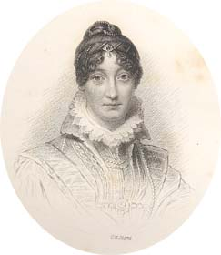
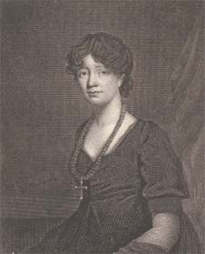

|
|
||||
|
|
Home | Corson Collection | Biography | Works | Image Collection | Recent Publications | Portraits | Correspondence | Forthcoming Events | Links | E-Texts | Contact Williamina, Charlotte and MarriageWilliamina Belsches (1776-1810) was the only child of Sir John Belsches Wishart, a wealthy Advocate who owned an estate at Fettercairn in Kincardineshire, and Lady Jane Belsches, the daughter of the Earl of Leven and Melville. Scott first noticed her while attending Greyfriars' Church in Edinburgh in 1790, and began courting her even though she was barely fourteen years old and of markedly higher social standing. By 1795 Scott had enough money to marry but scarcely enough to support a lady of Williamina's rank. He confided in his close friend William Clerk, a former classmate at Edinburgh University, whose advice was to write to Williamina and boldly declare his love. Both Scott's letter and Williamina's response have been lost. Scott is known to have been overjoyed by Williamina's reply. It seems likely, though, that she merely did not forbid him to hope and insisted that they remain circumspect. In all events, their relationship remained unchanged. In spring 1796 Scott went on a trip north which included a visit to Williamina's parents who, much to his delight, invited him to prolong his stay. However, unbeknown to Scott, Williamina had made the acquaintance of William Forbes of Pitsligo, heir of a banking family, during the previous winter. Their intimacy grew when Forbes stayed as a guest at Fettercairn in summer 1796, and on 12 October their engagement was announced. Scott felt humiliated and betrayed, and for many years believed that he had been led on and cruelly jilted. Slowly, Scott's anger receded and he half-realised that Williamina had not intended to hurt him. His pain nonetheless remained profound, and his subsequent correspondence avoids all mention of her name. Scott later wrote of marriage: 'Scarce one person out of twenty marries his first love, and scarce one out of twenty of the remainder has cause to rejoice at having done so. What we love in these early days is generally rather a fanciful creation of our own than a reality. We build statues of snow and weep when they melt.' (Letter to G.H. Gordon, 12 June 1820) Many critics have seen echoes of Scott's unsuccessful courtship of Williamina in the frustrated passions portrayed in his literary works, particularly those of Wilfred Wycliffe for Matilda Rokeby (Rokeby), of the Master of Ravenswood for Lucy Ashton (The Bride of Lammermoor), and of Darsie Latimer for 'Greenmantle' (Redgauntlet). In September 1797, on the invitation of his old college friend Charles Kerr, Scott set out on a tour of the English Lake District with his brother John and friend Adam Ferguson. Kerr had been residing in Cumberland for some time and was determined to persuade Scott that its beauty excelled that of the Scottish Highlands. It was while out riding during this trip that Scott first laid eyes on Charlotte Carpenter. That evening Walter was introduced to her at a ball and thereafter they saw each other daily. Charlotte, born in December 1770, was 27 years old. She was of French birth, her surname having been changed from Charpentier, and always retained a light French accent. She had lost both parents and was under the guardianship of Lord Downshire. Scott proposed marriage after only a three-week romance much to the disquiet of his parents. They were unimpressed by Charlotte's national origins, concerned that she might be a Catholic, and desired more information about her family. Charlotte replied that her father had worked for the French Royal Government but died when she was very young, that Lord Downshire had been his intimate friend, and that she had a brother in the East India Company. She was now a British citizen and had been christened in the Church of England. It was primarily, though, the reassurance that Charlotte's financial circumstances were stable that led Scott's parents to withdraw their objection. Their hostility rapidly softened when they learned that Charlotte's brother Charles had been a good friend of Simon Haliburton of Muirhouselaw, a close friend and relative of the Scotts. In fact, Charlotte's account of her background leaves many questions unanswered. The date and reasons for her arrival in England and the extent and nature of her father's acquaintance with Lord Downshire (thirty years his junior) remain puzzles to this day. It is possible that Charlotte herself was in the dark regarding many aspects of her family history. With Downshire readily giving his consent, the wedding took place on Christmas Eve 1797 at St Mary's Church in Carlisle. That night Scott returned to Edinburgh with his bride to the house that he had newly rented at 50 George Street (see Homes). The couple remained happy until the death of Charlotte three decades later on 15 May 1826.
Last updated: 24-Oct-2003
|
|||